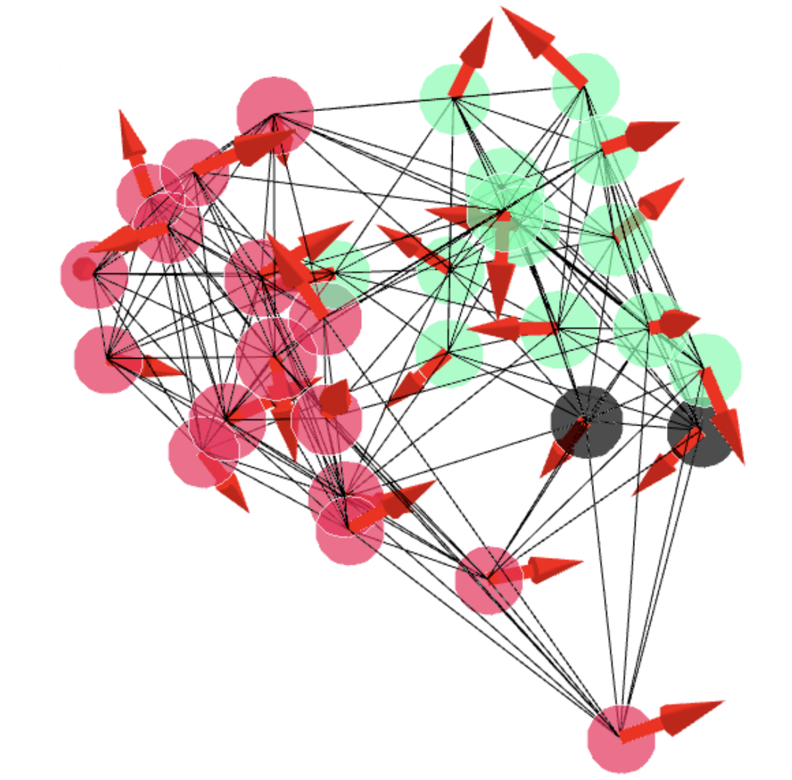

|
Petr Kouba I'm a PhD student at CIIRC in Prague.. . I've worked on ... |
{kind=link}
ResearchI'm interested in ... |

|
State of the Art on Diffusion Models for Visual Computing
Ryan Po, Wang Yifan, Vladislav Golyanik, Kfir Aberman, Jonathan T. Barron, Amit H. Bermano, Eric Ryan Chan, Tali Dekel, Aleksander Holynski, Angjoo Kanazawa, C. Karen Liu, Lingjie Liu, Ben Mildenhall, Matthias Nießner, Björn Ommer, Christian Theobalt, Peter Wonka, Gordon Wetzstein arXiv, 2023 A survey of recent progress in diffusion models for images, videos, and 3D. |

|
Machine Learning-Guided Protein Engineering
Petr Kouba, Pavel Kohout, Faraneh Haddadi, Anton Bushuiev, Raman Samusevich, Jiri Sedlar, Jiri Damborsky, Tomas Pluskal, Josef Sivic, Stanislav Mazurenko ACS Catalysis, 2023 paper Perspective and survey on challenges in Protein Engineering and progress enabled by Machine Learning. |
|

|
Learning to design protein-protein interactions with enhanced generalization
Anton Bushuiev, Roman Bushuiev, Anatolii Filkin, Petr Kouba, Marketa Gabrielova, Michal Gabriel, Jiri Sedlar, Tomas Pluskal, Jiri Damborsky, Stanislav Mazurenko, Josef Sivic In Submission, 2023 code / dataset / arXiv Introducing a novel large dataset of protein-protein interfaces and a model for predicting the strength of interaction of two protein structures (ddG prediction). |
TeachingI've been a teaching assistant for ... |
Education... |
|
This page is using the design provided by Jon Barron. |